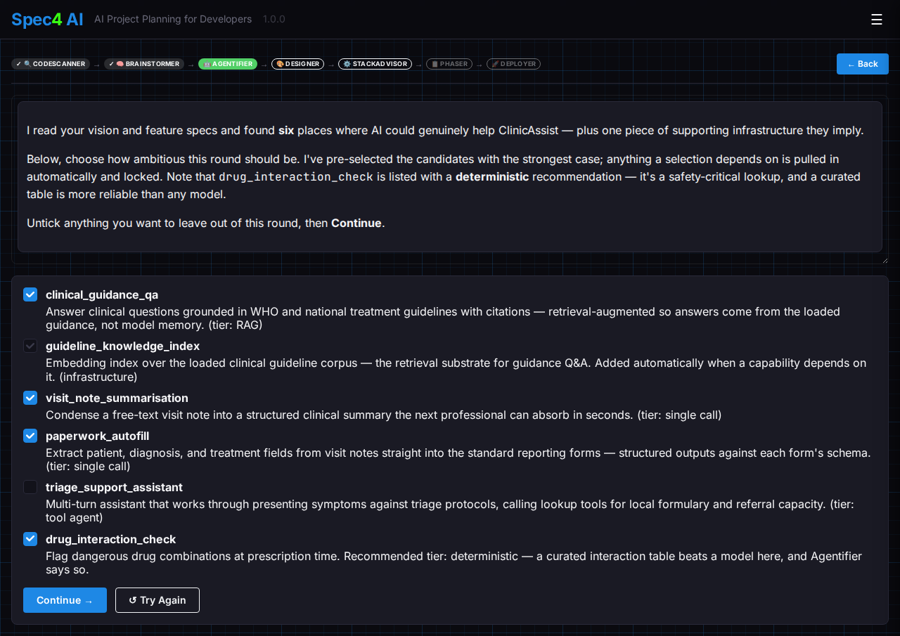
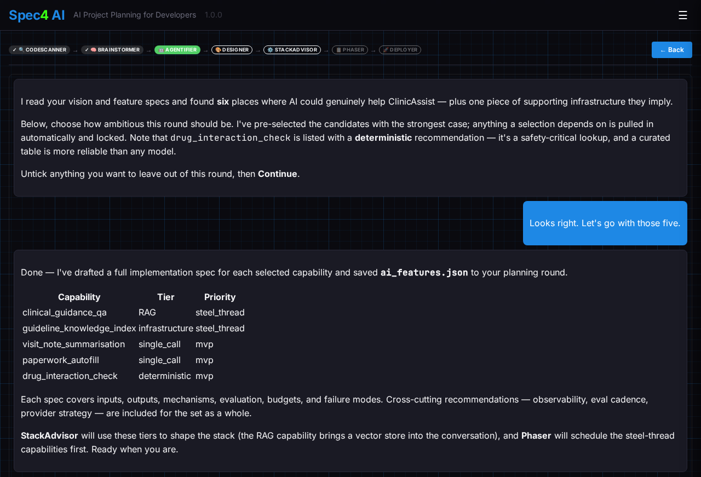

Design the AI inside your app.
Most plans treat AI features as an afterthought — "add a chatbot" scribbled in the margin. Agentifier reads your vision, identifies every place AI can genuinely help, right-sizes each one, and drafts a full implementation spec per feature — before a line of code is written.

Agentifier turns "we should use AI somewhere" into an engineering artifact. It scans the vision and feature specs from Brainstormer, surfaces every candidate AI capability, and presents them in an interactive selection panel — you choose how ambitious to be, and Agentifier keeps the selection consistent, automatically pulling in anything your choices depend on. Then it specs each selected feature in full.
Not every AI feature needs an agent — and not every agent needs a team of them. Agentifier assesses each capability against a graduated ladder, drawn from a curated pattern library with per-tier cost and latency envelopes, and recommends the lowest tier that genuinely meets the need. Every AI tier has a live, runnable example on Built with Spec4 — click through to see each pattern working. Complexity you don't ship is complexity you don't debug, eval, or pay for.
| Tier | What it is — and when it's the right call |
|---|---|
| Deterministic | Not AI at all — rules, lookup tables, regex, state machines, classical algorithms. When the decision space is enumerable and the rules are stable, plain code is cheaper, faster, fully testable, and never hallucinates. It's the default the other eight tiers have to earn their way past. |
| Embeddings See it live → |
Semantic operations without generation: text becomes vectors for nearest-neighbour search, clustering, deduplication, similarity scoring, topic routing. Stands alone whenever semantic search or grouping is the feature — and doubles as the retrieval half of RAG. |
| Single call See it live → |
One prompt in, one completion out — classify, extract, summarize, draft, structured or free-form. No retrieval, no tools, no multi-step reasoning. The workhorse tier, and the right answer for a large fraction of "add AI here" features. |
| RAG See it live → |
A single call augmented with retrieved context, generating answers grounded in your own documents. Buys two things a bare call can't: knowledge the model wasn't trained on, and citations back to a source. Retrieval plus generation — not an agent. |
| Tool agent See it live → |
One call (or a short chain) with a small, fixed set of tools. The model decides whether and which tool to call — fetch data, take a bounded action — then responds. Most of Spec4's own agents live in this tier. |
| Chained calls See it live → |
Multiple calls in a fixed, developer-designed sequence — extract → classify → generate — each step feeding the next. The pipeline is decided at design time, not by the model at run time: the same steps, in the same order, every time. |
| Planning agent See it live → |
The model plans, executes, observes, and revises its own plan in a loop, deciding at run time what to do next. The most powerful single-agent tier — and the one where most failed agent projects live, so Agentifier pushes back hard before recommending it. |
| Orchestrated subagents See it live → |
One user-facing coordinator delegates to specialist sub-agents and synthesizes their outputs — Agentifier itself is built this way. The bar versus a single well-prompted agent is high: the split has to buy something one agent can't. |
| Multi-agent collaboration See it live → |
Autonomous peer agents — potentially across trust boundaries, vendors, or organizations — that discover, negotiate, and exchange work over a protocol like A2A. The narrowest, most expensive, most over-reached tier: justified by necessity, almost never by elegance. |
Tiers set how much machinery a feature gets; mechanisms are the proven patterns that machinery is built from. Agentifier draws on a curated, community-contributable library of them — each with explicit guidance on when it earns its place and when it's overhead — and writes the chosen mechanisms into every feature's spec.
| Mechanism | What it is — and when it's the right call |
|---|---|
| Human in the loop | A human reviews the agent's output before it takes final effect — a gate on the action, not a co-author of every token. Done well, it puts review where mistakes are costly and confidence is low; done badly, it floods a person with rubber-stamp approvals or gates routine actions the agent gets right every time. |
| MCP | Whether to use the Model Context Protocol for tool and data access. MCP bundles two distinct decisions that must be reasoned about separately: consumption — should you reuse an existing MCP server instead of building an integration? — and exposure — should a capability you build be offered over MCP or just called directly? Conflating the two is the most common source of bad MCP decisions. |
| Parallel fan-out | Decompose a task into independent subtasks, run them concurrently, and aggregate the results. Buys wall-clock latency and sometimes quality — each branch gets a focused prompt — but only pays off when the decomposition is clean and the aggregation is cheaper than the work it combines. |
| Reflection | Generate, critique, regenerate — the agent loops over its own output, evaluating each draft (itself, or against a checker) and revising until a termination condition is met. Trades extra calls and latency for quality, and only earns its place when the critique measurably moves the output and the loop reliably terminates. |
| Retrieval + reranking | Within RAG, a second, more expensive scorer reorders first-stage retrieval candidates by true relevance before they enter the prompt. Embedding search casts a wide, recall-oriented net; the reranker reads each query–candidate pair carefully to pick the best few. Only helps when first-stage recall is good but its ordering is not. |
| Structured outputs | Schema-constrained generation: the model's output must conform to a defined structure — a JSON Schema, a Pydantic model, an enum. Downstream code gets a parseable object with known fields instead of free text, and bounding what the model can emit suppresses some classes of hallucination. |
The pattern library ships with Spec4 and is open to contributions — if you've battle-tested a mechanism the library doesn't cover, it's the best place to start contributing.
Agentifier is itself an orchestrated team of specialists — Spec4 practicing what it preaches. A Scout surveys your vision for AI opportunities. You select the breadth you want in the interactive panel. Then a Tier Analyst right-sizes each capability, a Spec Drafter writes the per-feature specs, a Cross-Cutting Analyst covers the shared concerns, and a Prioritizer sorts everything into steel_thread, mvp, and later — so Phaser knows exactly what to build first.
In a hurry? ⏩ Fast Forward sweeps the remaining decisions with Agentifier's best recommendations, then presents the complete set for your review.

Agentifier saves its output as ai_features.json — and the rest of the pipeline builds on it:
Open Spec4 and let Agentifier turn "we should use AI" into a real, right-sized, build-ready specification.